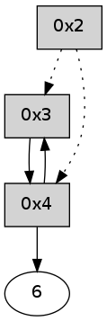

>> << IDX [start] -100 -25 -5 +0 +5 +25 +100 [300.335631132]
 Previous packets
----------------------------------------------------------------------
295.414545 beacon01(adaf) #0 coord=01,02,05,03,04,06 cycle=432.0ms assoc
-- color-indic=0 64 b2 fb
295.424505 beacon02(adaf) #0 coord=01,02,05,03,04,06 cycle=432.0ms assoc 64 e3 04
295.434505 beacon05(adaf) #0 coord=01,02,05,03,04,06 cycle=432.0ms assoc 64 45 2e
295.444506 beacon03(adaf) #0 coord=01,02,05,03,04,06 cycle=432.0ms assoc 64 d9 0a
295.454506 beacon04(adaf) #0 coord=01,02,05,03,04,06 cycle=432.0ms assoc 64 7f 20
295.464508 beacon06(adaf) #0 coord=01,02,05,03,04,06 cycle=432.0ms assoc 64 0b 3c
295.476130 [Hello(4): seq=91 sym=3 sysInfo= stat=3:10,0,0,0]
----------------------------------------------------------------------
295.906652 beacon01(adaf) #0 coord=01,02,05,03,04,06 cycle=432.0ms assoc
-- color-indic=0 64 76 94
295.916613 beacon02(adaf) #0 coord=01,02,05,03,04,06 cycle=432.0ms assoc 64 27 6b
295.926614 beacon05(adaf) #0 coord=01,02,05,03,04,06 cycle=432.0ms assoc 64 81 41
295.936615 beacon03(adaf) #0 coord=01,02,05,03,04,06 cycle=432.0ms assoc 64 1d 65
295.946614 beacon04(adaf) #0 coord=01,02,05,03,04,06 cycle=432.0ms assoc 64 bb 4f
295.956616 beacon06(adaf) #0 coord=01,02,05,03,04,06 cycle=432.0ms assoc 64 cf 53
----------------------------------------------------------------------
296.398763 beacon01(adaf) #0 coord=01,02,05,03,04,06 cycle=432.0ms assoc
-- color-indic=0 64 3a 24
296.408723 beacon02(adaf) #0 coord=01,02,05,03,04,06 cycle=432.0ms assoc 64 6b db
296.418723 beacon05(adaf) #0 coord=01,02,05,03,04,06 cycle=432.0ms assoc 64 cd f1
296.428723 beacon03(adaf) #0 coord=01,02,05,03,04,06 cycle=432.0ms assoc 64 51 d5
296.438724 beacon04(adaf) #0 coord=01,02,05,03,04,06 cycle=432.0ms assoc 64 f7 ff
296.448724 beacon06(adaf) #0 coord=01,02,05,03,04,06 cycle=432.0ms assoc 64 83 e3
296.460347 [Hello(4): seq=92 sym=3 sysInfo= stat=3:11,0,0,0]
----------------------------------------------------------------------
296.890870 beacon01(adaf) #0 coord=01,02,05,03,04,06 cycle=432.0ms assoc
-- color-indic=0 64 fe 4b
296.900830 beacon02(adaf) #0 coord=01,02,05,03,04,06 cycle=432.0ms assoc 64 af b4
296.910831 beacon05(adaf) #0 coord=01,02,05,03,04,06 cycle=432.0ms assoc 64 09 9e
296.920832 beacon03(adaf) #0 coord=01,02,05,03,04,06 cycle=432.0ms assoc 64 95 ba
296.930832 beacon04(adaf) #0 coord=01,02,05,03,04,06 cycle=432.0ms assoc 64 33 90
296.940831 beacon06(adaf) #0 coord=01,02,05,03,04,06 cycle=432.0ms assoc 64 47 8c
----------------------------------------------------------------------
297.382980 beacon01(adaf) #0 coord=01,02,05,03,04,06 cycle=432.0ms assoc
-- color-indic=0 64 a0 2a
297.392940 beacon02(adaf) #0 coord=01,02,05,03,04,06 cycle=432.0ms assoc 64 f1 d5
297.402940 beacon05(adaf) #0 coord=01,02,05,03,04,06 cycle=432.0ms assoc 64 57 ff
297.412941 beacon03(adaf) #0 coord=01,02,05,03,04,06 cycle=432.0ms assoc 64 cb db
297.422942 beacon04(adaf) #0 coord=01,02,05,03,04,06 cycle=432.0ms assoc 64 6d f1
297.432941 beacon06(adaf) #0 coord=01,02,05,03,04,06 cycle=432.0ms assoc 64 19 ed
297.444564 [Hello(4): seq=93 sym=3 sysInfo= stat=3:11,0,0,0]
----------------------------------------------------------------------
297.875087 beacon01(adaf) #0 coord=01,02,05,03,04,06 cycle=432.0ms assoc
-- color-indic=0 64 64 45
297.885051 beacon02(adaf) #0 coord=01,02,05,03,04,06 cycle=432.0ms assoc 64 35 ba
297.895050 beacon05(adaf) #0 coord=01,02,05,03,04,06 cycle=432.0ms assoc 64 93 90
297.905049 beacon03(adaf) #0 coord=01,02,05,03,04,06 cycle=432.0ms assoc 64 0f b4
297.915048 beacon04(adaf) #0 coord=01,02,05,03,04,06 cycle=432.0ms assoc 64 a9 9e
297.925050 beacon06(adaf) #0 coord=01,02,05,03,04,06 cycle=432.0ms assoc 64 dd 82
----------------------------------------------------------------------
298.367195 beacon01(adaf) #0 coord=01,02,05,03,04,06 cycle=432.0ms assoc
-- color-indic=0 64 28 f5
298.377158 beacon02(adaf) #0 coord=01,02,05,03,04,06 cycle=432.0ms assoc 64 79 0a
298.387156 beacon05(adaf) #0 coord=01,02,05,03,04,06 cycle=432.0ms assoc 64 df 20
298.397157 beacon03(adaf) #0 coord=01,02,05,03,04,06 cycle=432.0ms assoc 64 43 04
298.407157 beacon04(adaf) #0 coord=01,02,05,03,04,06 cycle=432.0ms assoc 64 e5 2e
298.417157 beacon06(adaf) #0 coord=01,02,05,03,04,06 cycle=432.0ms assoc 64 91 32
298.428797 [Hello(4): seq=94 sym=3 sysInfo= stat=3:12,0,0,0]
----------------------------------------------------------------------
298.859303 beacon01(adaf) #0 coord=01,02,05,03,04,06 cycle=432.0ms assoc
-- color-indic=0 64 ec 9a
298.869267 beacon02(adaf) #0 coord=01,02,05,03,04,06 cycle=432.0ms assoc 64 bd 65
298.879264 beacon05(adaf) #0 coord=01,02,05,03,04,06 cycle=432.0ms assoc 64 1b 4f
298.899265 beacon04(adaf) #0 coord=01,02,05,03,04,06 cycle=432.0ms assoc 64 21 41
298.909265 beacon06(adaf) #0 coord=01,02,05,03,04,06 cycle=432.0ms assoc 64 55 5d
298.920906 [Hello(2): seq=593 asym=4 sysInfo= stat=4:15,0,0,0]
----------------------------------------------------------------------
299.351413 beacon01(adaf) #0 coord=01,02,05,03,04,06 cycle=432.0ms assoc
-- color-indic=0 64 a1 9d
299.361375 beacon02(adaf) #0 coord=01,02,05,03,04,06 cycle=432.0ms assoc 64 f0 62
299.371376 beacon05(adaf) #0 coord=01,02,05,03,04,06 cycle=432.0ms assoc 64 56 48
299.381376 beacon03(adaf) #0 coord=01,02,05,03,04,06 cycle=432.0ms assoc 64 ca 6c
299.391374 beacon04(adaf) #0 coord=01,02,05,03,04,06 cycle=432.0ms assoc 64 6c 46
299.401375 beacon06(adaf) #0 coord=01,02,05,03,04,06 cycle=432.0ms assoc 64 18 5a
299.413016 [Hello(4): seq=95 sym=3,6 sysInfo= stat=3:12,0,0,0/6:0,0,0,0]
----------------------------------------------------------------------
299.843522 beacon01(adaf) #0 coord=01,02,05,03,04,06 cycle=432.0ms assoc
-- color-indic=0 64 65 f2
299.853483 beacon02(adaf) #0 coord=01,02,05,03,04,06 cycle=432.0ms assoc 64 34 0d
299.863482 beacon05(adaf) #0 coord=01,02,05,03,04,06 cycle=432.0ms assoc 64 92 27
299.873482 beacon03(adaf) #0 coord=01,02,05,03,04,06 cycle=432.0ms assoc 64 0e 03
299.883484 beacon04(adaf) #0 coord=01,02,05,03,04,06 cycle=432.0ms assoc 64 a8 29
299.893485 beacon06(adaf) #0 coord=01,02,05,03,04,06 cycle=432.0ms assoc 64 dc 35
299.905153 [Hello(2): seq=594 asym=3,4 sysInfo= stat=3:0,0,0,0/4:15,0,0,0]